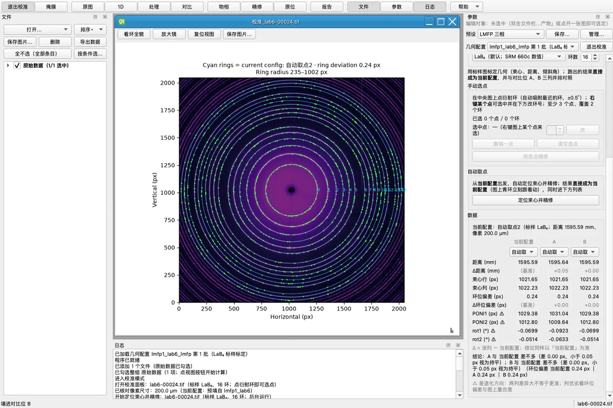
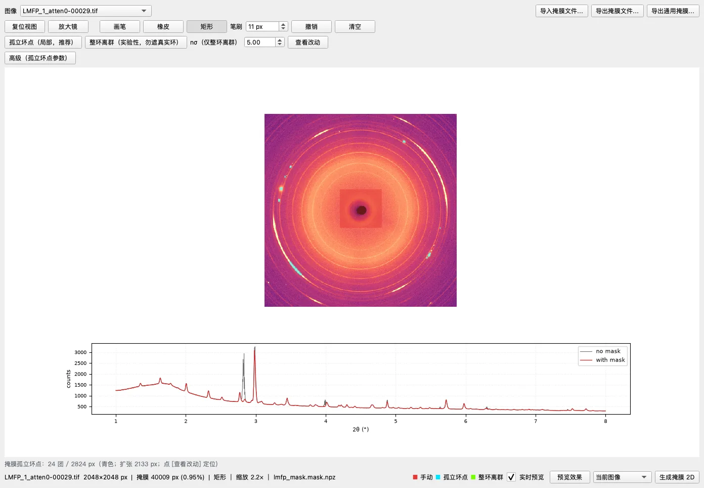
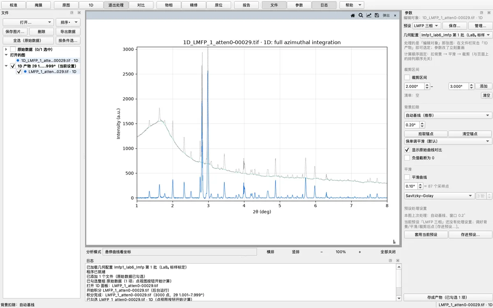
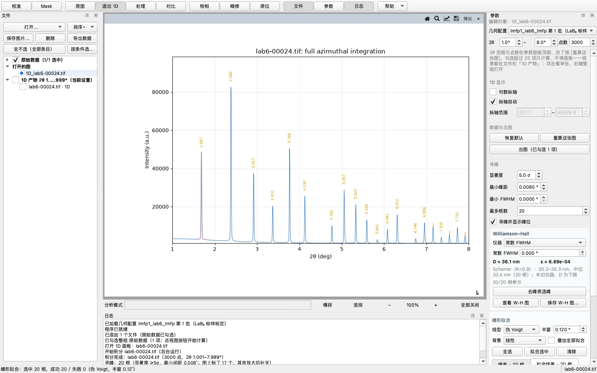
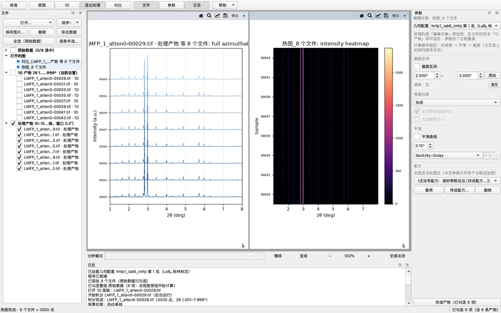
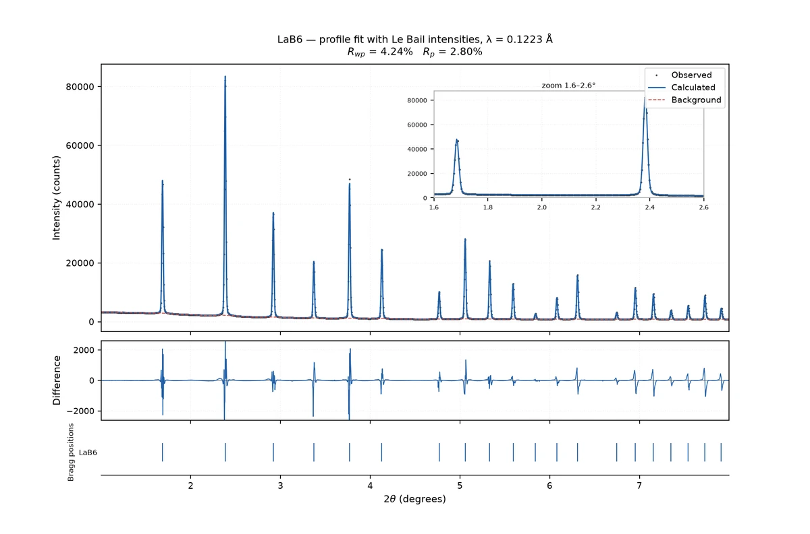
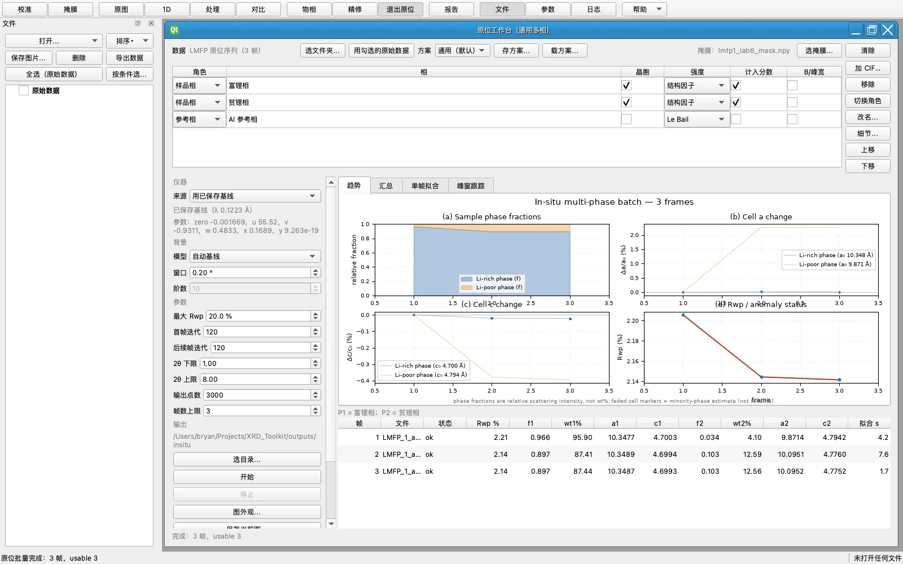

一条流水线，从图像到结果
五个阶段共用同一套引擎与同一份缓存，桌面界面和命令行结果一致。
导入
二维衍射图与标样帧，单个文件或整个文件夹。
校准
pyFAI 几何精修，16 环标定，给出环偏差结论。
掩膜
遮 beamstop、模块缝与固定坏点，自动检测可追溯。
积分
0°–360° 方位角积分，输出标准两列粉末谱。
分析
寻峰、峰形、物相、全谱精修、原位批量与报告。
从原始图像到精修结果
一条链路覆盖校准、掩膜、积分、分析、批量、报告与模拟；命令行和桌面界面共用同一套引擎。
校准与 2D → 1D 积分
LaB₆、CeO₂、Si 等标样做 pyFAI 几何精修，0°–360° 完整方位角积分，输出标准两列粉末谱。
积分前的掩膜
画笔/矩形/椭圆/套索遮 beamstop 阴影、模块缝与固定坏点；自动坏点检测，生成可追溯的 Mask 2D 产物。
背景、平滑与裁剪
空扫相减、自动基线、手动锚点；滑动平均 / Savitzky–Golay 平滑与区间裁剪，负值默认保留。
寻峰与单峰拟合
稳健噪声估计自动寻峰；Gaussian / Lorentzian / pseudo-Voigt / split-Pearson VII 拟合，附 Scherrer 与 Williamson–Hall 分析；W-H 卡片常显，没峰时一键去寻峰。
物相识别与晶胞
观测峰位与内置 41 张精选相库或自选 CIF 目录逐相打分，周期表点选元素、多相叠加；七晶系峰位晶胞精修，含 2θ 零位。
全谱拟合
Thompson–Cox–Hastings 峰形，Le Bail 或结构精修，支持额外相、原子坐标与位点占位精修、仪器基线与 wt%；原位页是通用多相页面（LMFP 是内置方案）：背景模型 / 仪器来源可选、结果表紧凑列、方案可存可载，趋势 / 汇总 / 单帧拟合 / 峰窗跟踪四视图。
批量对比与热图
整文件夹积分，产物按阶段缓存；对比曲线、堆叠视图与 2θ × 样品热图，两下点击出图。
方案管理
一份方案打包几何、第二相、原位目录与掩膜、相库和处理设置；参数坞一键切换、保存与管理，换样品不用重设。
一键分析报告
把 1D、峰表、单峰拟合、W-H、物相、精修与原位结果汇成自包含 HTML，图内嵌，可直接打印 PDF；未做的节明确标注。
CIF 理论谱模拟
布拉格定律 + 结构因子手写实现，带 (hkl) 标注；与 pymatgen 参考计算逐峰对拍。
实际跑出来的样子
真数据截图，不是示意图：校准、掩膜、背景、寻峰/W-H、批量对比、全谱拟合与 81 帧原位四视图。点击任意图片可放大。

🔍 放大
🔍 放大
🔍 放大
🔍 放大
🔍 放大
🔍 放大
🔍 放大下载即用
不用装 Python，解压后双击。链接始终指向最新版本，当前为 v0.2.1（2026-11-19）。
首次打开提示：应用未做系统签名，第一次打开会被系统拦截一次。Windows 点「更多信息 → 仍要运行」；macOS 右键 →「打开」。下载约 150 MB，解压约 340 MB，包含完整计算环境。如果无法访问 GitHub，请直接联系把本页发给你的人获取安装包。
文档与反馈
从快速上手到实现细节，遇到问题可以直接开 issue。